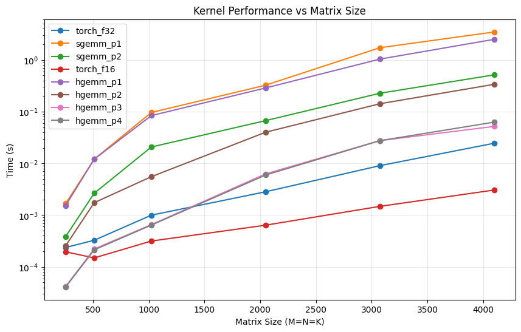

Projects / GPU kernels
CS 4787, Cornell · CUDA, C++, PyTorch
GPU kernels for transformer inference
Most of the work a language model does when it answers a question is one operation: multiplying large matrices. I wrote that operation from scratch on a GPU four times, each version smarter than the last, and measured every step.

Four versions, one idea each
| Version | Idea | Plain language |
|---|---|---|
| 1. Naive | One thread per output value, reading straight from global memory | Every worker walks to the warehouse for every single item. |
| 2. Tiled | Blocks of 256 threads share 16×16 tiles in fast on-chip memory | A team brings a box back to their desk once, then reuses it 16 times. |
| 3. TensorCore | WMMA instructions run the multiply on dedicated matrix hardware | Hand the job to a machine built for exactly this task. |
| 4. Mixed precision | Half-precision inputs, full-precision running sums | Same speed, but keep the running total exact so rounding errors don't pile up. |
Accuracy, not just speed
Fast and wrong is useless, so I checked every kernel against a high-precision reference. Keeping the running sum in full precision (version 4) cut the error from about 1 in 70,000 to about 1 in 15 billion, at essentially the same speed. This is the same trade-off that makes mixed-precision training work in practice.
What I'd do next
NVIDIA's cuBLAS still wins at large sizes. The gap comes from techniques I left out on purpose: larger tiles with register blocking, staging TensorCore inputs in shared memory, double buffering to hide memory delays, avoiding shared-memory bank conflicts, and autotuning per GPU. Those are my next steps, roughly in order of expected payoff.
See the TensorCore kernel (CUDA)
__global__ void hgemm_p3_kernel(const __half* A, const __half* B, __half* C,
const size_t M, const size_t N, const size_t K) {
// each block is a single warp that computes one 16x16 tile of C
const int row = blockIdx.x * 16;
const int col = blockIdx.y * 16;
wmma::fragment<wmma::matrix_a, 16, 16, 16, half, wmma::row_major> a_frag;
wmma::fragment<wmma::matrix_b, 16, 16, 16, half, wmma::col_major> b_frag;
wmma::fragment<wmma::accumulator, 16, 16, 16, half> c_frag;
wmma::fill_fragment(c_frag, __float2half(0.0f));
for (int k0 = 0; k0 < (int)K; k0 += 16) {
const half* tile_A = reinterpret_cast<const half*>(A + row * K + k0);
// read B (N x K, row-major) as B^T (K x N, col-major): no transpose needed
const half* tile_B = reinterpret_cast<const half*>(B + col * K + k0);
wmma::load_matrix_sync(a_frag, tile_A, K);
wmma::load_matrix_sync(b_frag, tile_B, K);
wmma::mma_sync(c_frag, a_frag, b_frag, c_frag); // runs on TensorCores
}
// ... store c_frag to C
}Full source and benchmark script: github.com/arnavtevatia/cuda-transformer-inference-optimization